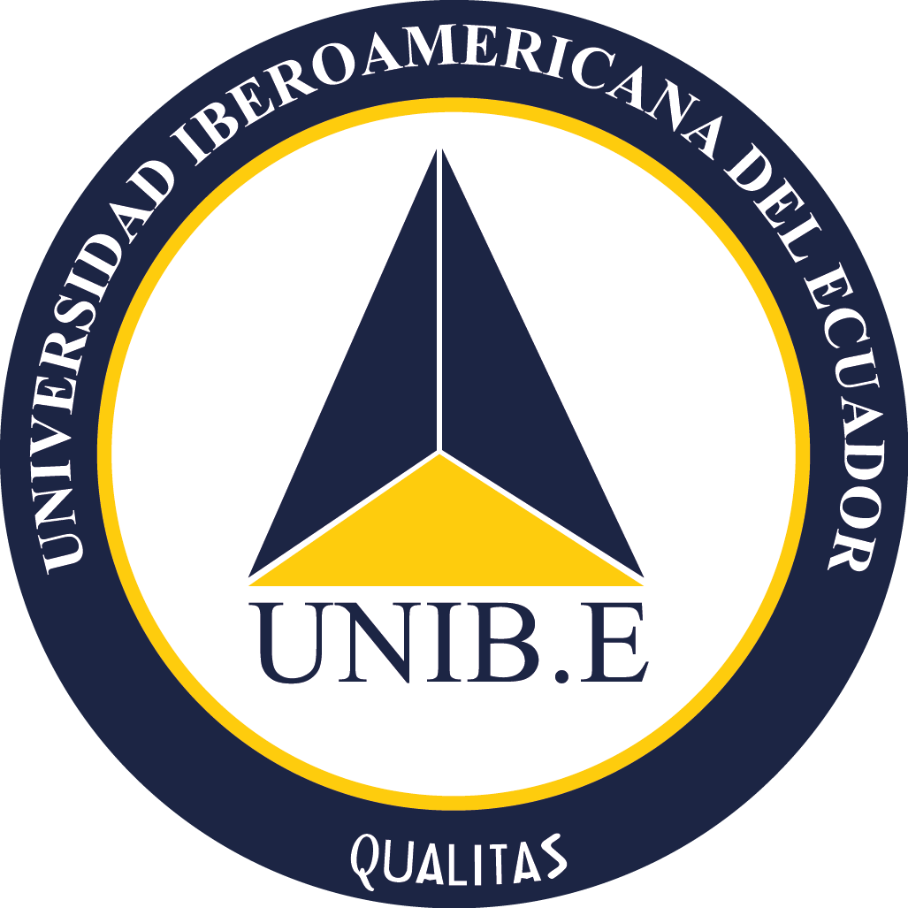

|  |
UNIVERSIDAD IBEROAMERICANA DEL ECUADOR |
FORMULARIO No. UNIBE-VRA-DA--021-F |
RESULTADO PROCESO DE LECTORÍA |
Fecha de emisión:
Nombre del estudiante:
Por medio de la presente se le informa que su trabajo ha sido leído por el (la) lector (a) designado (a), por que se remite a usted las observaciones para que sean aplicadas al documento de titulación.
Tema del Trabajo de Integración Curricular:
Fecha máxima de entrega de las correcciones en formato Word y PDF:
Unidad de Titulación de la UNIB.E.